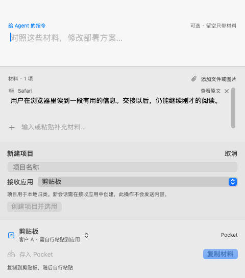
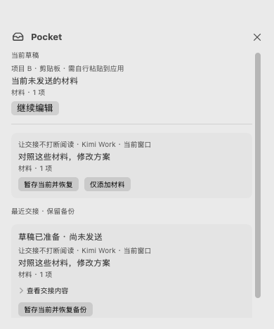
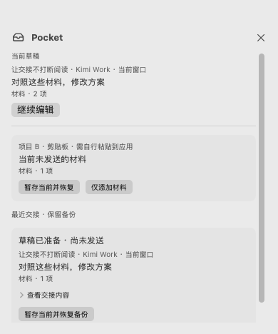

BEAMHOP · NATIVE macOS
在一个浮层里，把事情交代清楚。
修改材料、补充文字，写下给 Agent 的指令。项目帮助归类，应用与当前窗口说明实际去处。
2026-10-21 · 版本15.7.9（版号24G830）
57 / 57
指令与材料，都能直接改。
原始选区留作对照；修改后的文字才用于交接。Return 换行，⌘Return 继续。

新建时，留住手上的内容。
项目在本地创建；新会话需在接收应用中创建，当前输入不会被清空。


Pocket 保存整份草稿。
材料、指令和接收方一起保留。恢复前先暂存当前输入，也可仅添加材料。


交接备份可以恢复。
草稿已准备不代表已发送。恢复的是交接时的副本，原应用里的后续编辑不会同步。


当前接入范围
当前通道支持文字草稿或剪贴板交接。文件和图片可保存在 Pocket，但需手动添加到接收应用。没有已验证的外部会话地址或后台接收回执。真实登录后的应用、VoiceOver、多屏及全屏场景仍需设备验证。